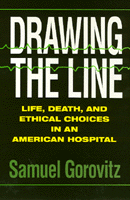

A moving and hard-hitting glimpse of daily reality at a major hospital
A moving and hard-hitting glimpse of daily reality at a major hospital


 A moving and hard-hitting glimpse of daily reality at a major hospital
A moving and hard-hitting glimpse of daily reality at a major hospital

|  |
Drawing the LineLife, Death, and Ethical Choices in an American HospitalSamuel Gorovitzpaper EAN: 978-1-56639-149-8 (ISBN: 1-56639-149-0) |
"This book could have a definite impact on the thinking and planning of all those associated with health care.... This intelligent book is easily accessible to general readers and will also interest professionals in medicine and medical ethics."
—The New England Journal of Medicine
In Drawing the Line, philosopher Samuel Gorovitz examines the ethical questions that permeate the daily lives of medical professionals: Who should be making life and death decisions? How should scarce medical resources be allocated? What rules should govern the use of fetal tissues in research? Where should we draw the line?
The questions are rooted in the author's seven-week observation of events at Boston's Beth Israel hospital. Gorovitz shares with readers an intense, disturbing, and insightful account of operating rooms, intensive care units, surgeons' meetings, and administrative discussions of competition in the health-care market. His unusual look at contemporary health care combines startling reality with the provocative reflections of a highly respected philosopher.
"Bravissimo!"
—Walter G. Gunn, M.D., Journal of the American Medical Association
"Lively, engaging, and thought provoking...."
—Ethics
"The author's detailed accounts...bring clarity to the many difficult and perplexing issues challenging the delivery of medical care."
—Choice
1. Introduction
2. The Initial Visit
3. The First Week
4. OBGYN
5. Failing Organs
6. Very Ill and Very Old
7. At the End of Life
8. Marketing Heath Care
9. Learning Medicine in the "House of God"
10. The Last Visit
Additional Readings
Index
 | Samuel Gorovitz is Dean of the College of Arts and Sciences and Professor of Philosophy at Syracuse University. He is also the author of the widely hailed Doctors' Dilemmas. |
Health and Health Policy
Philosophy and Ethics
© 2015 Temple University. All Rights Reserved. This page: http://www.temple.edu/tempress/titles/1149_reg.html.